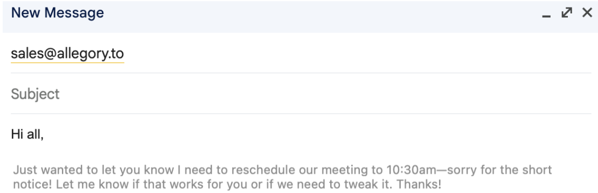

Autocomplete everywhere that reads your mind

At Fergana Labs, as one of our first experiments with what better AI memory can do, we built system-wide contextual autocomplete in every text box on your computer for MacOS. We also built a system to grab context from everywhere on your computer. We named it codeswitch, and it's shockingly good!
In order to build this so that it works well on MacOS, we had to make some interesting / nonstandard design decisions. In this blog post, I'll talk through these decisions.
Using Accessibility tools to mock grey "ghost" text + replace text
Most of the standard autocomplete operations (suggested text, replacing text for "rephrase feature") are not possible without MacOS a11y APIs.
- We generate "ghost text" NSPanel by getting the element and cursor's caret position via AXUIElement Position Attributes
- We also get the bounds of the Panel with
AXSelection.capture, which allows us to render a panel that matches the size of the input field that the cursor is currently in. - For our "rephrase" feature, in order to insert a rephrase suggestion, we actually manually highlight text and then overwrite the text by copy-pasting, which yields a surprisingly smooth UX.
- Our abuse of a11y APIs unfortunately means that Codeswitch can never live on the app store!
Hijacking the system clipboard in order to actually add the suggestion on "tab"
- In order to add text on "tab", we manually append the text to the user's system clipboard, and then mock a cmd-v event in order to paste it.
- In order to ensure that the user doesn't lose the text that they just copied to overwriting, we also implemented a virtual clipboard similar to the Raycast clipboard history extension.
- In order to handle the case where text is added to the clipboard without CMD-C (for example, a button to click to copy in a browser), we regularly poll for clipboard changes in order to catch these events and add them to the user's virtual clipboard.
- We handle the "tab" shortcut, as well as intercepting CMD-C and CMD-X events, with Global keyboard shortcut interception via
NSEvent.addGlobalMonitorForEvents(matching:handler:)for a number of shortcuts, including tab.
Reverse engineering Google Docs' canvas-based rendering
Google Docs uses a custom canvas-based rendering system that doesn't play nicely with standard accessibility tools. To make our autocomplete work in Google Docs, we had to reverse engineer their rendering system and build custom integration points.
This involved understanding how Google Docs maps virtual cursor positions to actual canvas coordinates, and then positioning our autocomplete suggestions accordingly. It was one of the trickiest parts of the implementation, but the result is seamless autocomplete even in the most complex web applications.
We found this random guy's github discussion extremely helpful